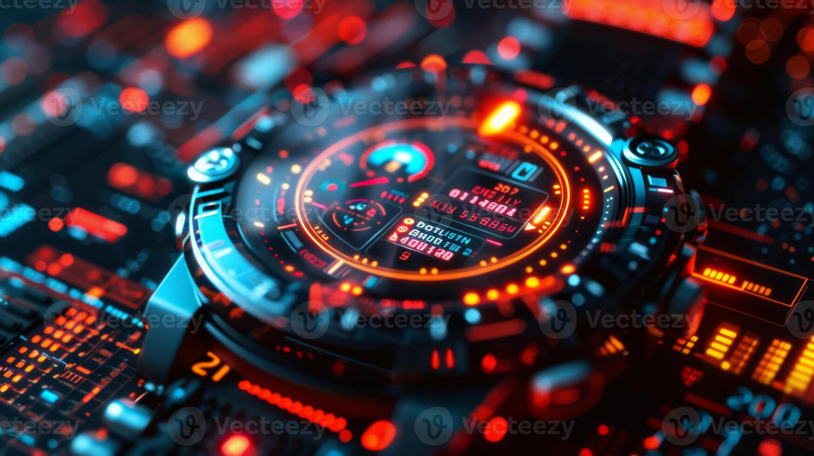

Technology Integration
78%
Watches with Smart Features
Consumer Adoption
65%
Prefer Tech Features
Market Impact
42%
Sales Growth in Tech Watches
Design Evolution & Consumer Impact
Modern Design Integration
- Seamless tech integration in classic designs
- Enhanced user interface experiences
- Customizable watch faces
- Premium materials with smart capabilities
- Sustainable manufacturing processes
Consumer-Driven Features
- Personalized health monitoring
- Contactless payment integration
- Environmental sensors
- Advanced fitness tracking
- Extended battery life solutions
Sales & Market Trends
Retail Innovation
- Virtual try-on experiences
- AR product visualization
- Online customization tools
- Digital ownership certificates
- Direct-to-consumer channels
Market Response
- Growing demand for hybrid watches
- Increased focus on sustainability
- Rise of digital-first brands
- Integration of AI in marketing
- Enhanced after-sales service
Industry Transformation
The watch industry's technological evolution has created new opportunities and challenges:
- Manufacturing: Integration of advanced production technologies
- Distribution: Digital-first sales channels and experiences
- Consumer Engagement: Enhanced digital touchpoints and personalization
- Product Development: Rapid prototyping and market testing
- Sustainability: Eco-friendly materials and processes